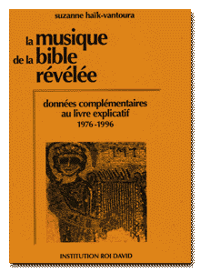

Les signes de cantilation
de la BIBLE hébraïque livrent leur secret...
Ils recelaient une MUSIQUE de grand art qui épouse le TEXTE,
qui le magnifie!
Ce sont les chants des LEVITES, ceux perpétués au
Temple de JERUSALEM
sous l'impulsion de DAVID et selon sa gestuelle.
L'Histoire - scrutée dans le détail - confirme cette
restitution.
|  |
|
Ces données complémentaires au livre explicatif "La Musique de la Bible Révélée" sont le fruit des recherches successives que j'ai entreprises dés la publication du livre, et poursuivies jusqu'en 1991, date de la publication de sa traduction anglaise et pour certaines bien au-delà. D'autre part, les nombreuses réalisations musicales qui ont eu lieu depuis la divulgation de ma découverte de la Musique de la Bible en 1976, par le déchiffrement de sa notation antique (plus de 5000 versets édités) ont pleinement confirmé l'authenticité de la Clé de Déchiffrement. Ainsi enrichie et confortée, ma recherche
historique permet maintenant d'affirmer pleinement ce qu'antérieurement,
je ne faisais que pressentir avec force: les mélodies
qui renaissent des signes décryptés sont la musique
d'origine de la Bible, oeuvre de ses écrivains mélodes.
Clé de Déchiffrement Un condensé avec les données
générales et l'application de la clé de
déchiffrement
|